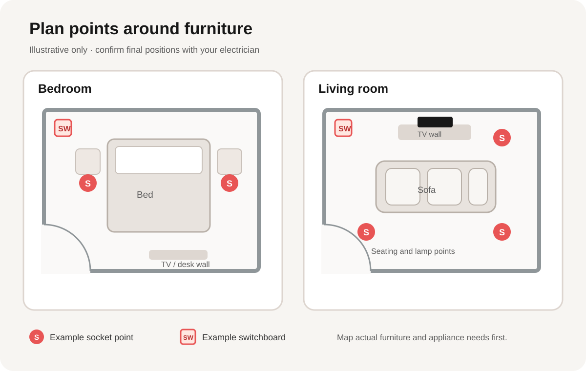

Switch and Socket Planning for Pune Homes
Plan electrical points after you have a furniture layout, but before wall or ceiling work is closed. A simple room plan helps your electrician understand how you expect to use the space.
Switchboards and sockets are easiest to review while a renovation is still being planned. Mark the bed, sofa, television, desk and larger appliances first; then discuss the required points and wiring route with the electrician. The final position, circuit and load should be checked by a qualified professional for the actual home.

Planning an electrical or interior project? Share the rooms and work you have in mind.
Start with the furniture plan
Sketch each room and show doors, windows and fixed furniture. Include planned changes such as a new wardrobe, TV unit or study desk. This helps reveal when a switch could be hidden behind furniture or a socket may end up difficult to reach.
- Mark the bed, bedside tables, wardrobe and any dressing or work area in the bedroom.
- Mark the sofa, television or media unit, side tables and likely lamp positions in the living room.
- Show door swings and regular walking paths so controls and furniture do not conflict.
- List the devices that may be used in each area instead of guessing how many outlets are needed.
Bedroom points to review
Think through the routine from the doorway to the bed. Discuss a convenient place for the room light controls, then review bedside charging or reading-light needs with the electrician. If the room will include a television, desk, dressing unit or other equipment, mark those locations on the same drawing.
Check that planned wardrobe doors and drawers can open without blocking a switch or socket. If the layout is still changing, agree on the furniture dimensions before finalizing electrical positions.
Living-room points to review
For the television wall, plan the screen and media furniture first, then identify power and connection needs with the electrician. Consider where lamps or other frequently used devices may sit near the seating area. Keep controls easy to reach from the room entrance and review them against the final furniture arrangement.
Where a ceiling light or concealed lighting is part of the design, coordinate the fixture and switch plan with ceiling work. Arsh Interiors lists concealed wiring, modular switchboards and lighting installation among its electrical services in Pune, and offers false-ceiling work that may need to be coordinated with lighting.
Ask the electrician to confirm the technical details
A furniture plan is a planning aid, not a wiring specification. Ask the electrician to review the actual equipment, circuit layout, expected load, protection and applicable requirements before deciding on the final points. Avoid moving, opening or connecting electrical wiring yourself.
Arsh Interiors’ electrical service page describes concealed conduit wiring, switchboards, lighting and appliance points. When discussing the scope, confirm which rooms and items are included and what needs a separate estimate.
Keep one marked-up plan
Before work begins, save a dated plan showing the agreed furniture, switchboards, sockets, lights and any questions still to be resolved. Review it with the electrician and the other contractors before wall finishes or ceilings are closed. If the furniture plan changes, update the electrical drawing before installation.
Before-work checklist
- Room measurements and door/window positions are recorded.
- Bed, sofa, television, wardrobe and desk positions are marked.
- Regular devices and lighting needs are listed room by room.
- Switches remain accessible after the furniture is installed.
- Ceiling lights and any concealed lighting are coordinated with ceiling work.
- The electrician has confirmed final locations, circuits and technical requirements.
- The agreed scope and exclusions are written down before work starts.
Frequently asked questions
When should I decide switch and socket locations?
Review them after sketching the furniture and appliance layout, and before related wall or ceiling work is closed. The electrician should confirm the final installation details.
Can I use this diagram as an installation plan?
No. It is an illustrative example. Your electrician needs to assess the actual room, equipment, circuits and applicable requirements.
What if my furniture layout changes later?
Update the marked-up plan and ask the electrician to review any affected points before installation. It is easier to coordinate the positions before finishes and furniture are in place.
For a broader view, visit Arsh Interiors’ services, see custom furniture in Pune, or browse the other planning guides.
Ready to discuss your room plan?